why it mattered
Wish Week is one week of the school year when my high school is assigned a child with a critical illness, builds the whole week around celebrating them, and raises money with Make-A-Wish Colorado to grant their wish. It's run by student government and is a big tradition in Colorado. Each year a committee of project coordinators, six seniors and two juniors, takes on leading the whole project. My peers voted me onto it as a junior and again as a senior.
My senior year was the chance to take what I'd learned over three years and own it. Our wish kid was Carter, whose wish was to design his own LEGO set. That year we raised $124,279.27 and granted 17 wishes.
Within the committees, I led video committee and the opening assembly, and because of my interests I also led branding, the website, the social media campaign, and merch. Video stuff can be found here: the wish week reveal video
designing a brand to celebrate
The theme, colors, and hashtag are chosen after we meet the wish kid, and the whole school doesn't find out who he is until the opening assembly. We knew Carter's wish, but we didn't design anything final until we met him. But after our first meeting, it was clear the word "joy" spoke to us, and it became our theme for the week: #CreateJoyForCarter.
the smile
The logo started with a simple idea: put a smiley face on a regular LEGO minifigure head, but the smile had to be his. After that, whenever minifigure artwork on decorations around the halls had that particular smile instead of the standard LEGO one, everyone knew it was meant to be Carter.
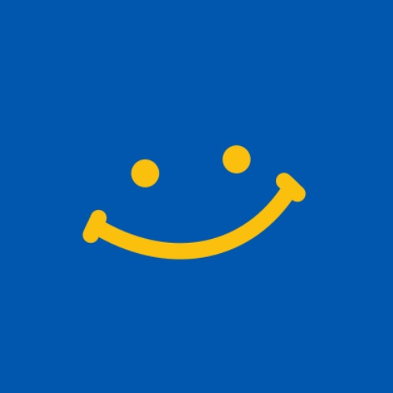
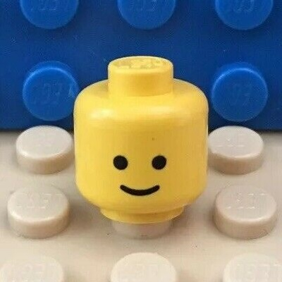
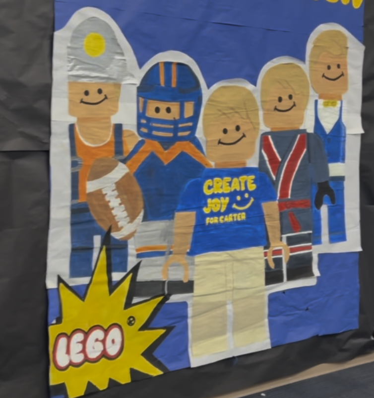
the brand, in four decisions
I made the smiley logo and color scheme in close collaboration with my fellow project coordinators and our advisor.
the hoodie
Each year we sell wish week merch with Wish Week t-shirts and other goodies. This year we tried hoodies for the first time. We weren't sure how they'd do, so we ordered only about 200 (school population of ~2000). They nearly sold out on the first day, so we rushed a second order for later in the week, and that sold out too. I designed the hoodie, along with the stickers. The only thing I didn't make was the shirt itself.
- first order
- ~200 hoodies
- day one
- nearly sold out
- rush reorder
- sold out too
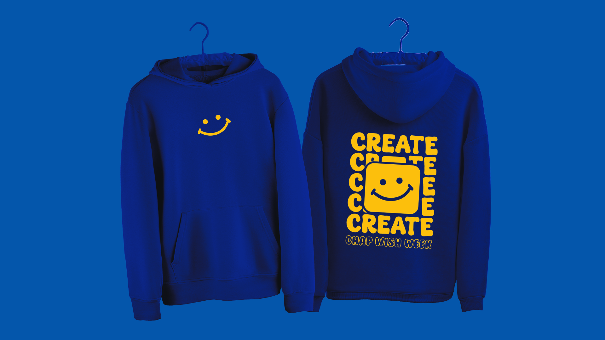
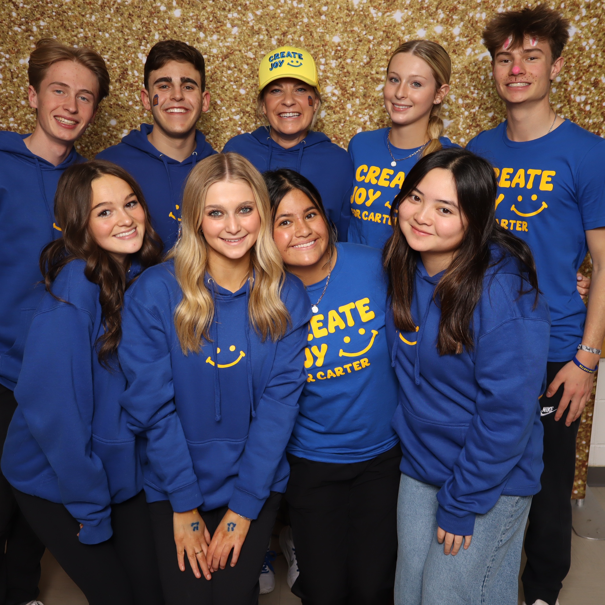
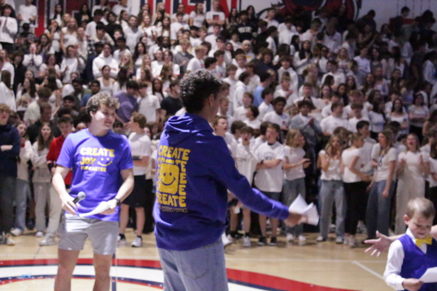
stickers
The same smile theme carried onto five sticker designs, small enough to end up on laptops and water bottles around school, and made to celebrate our wish kid.
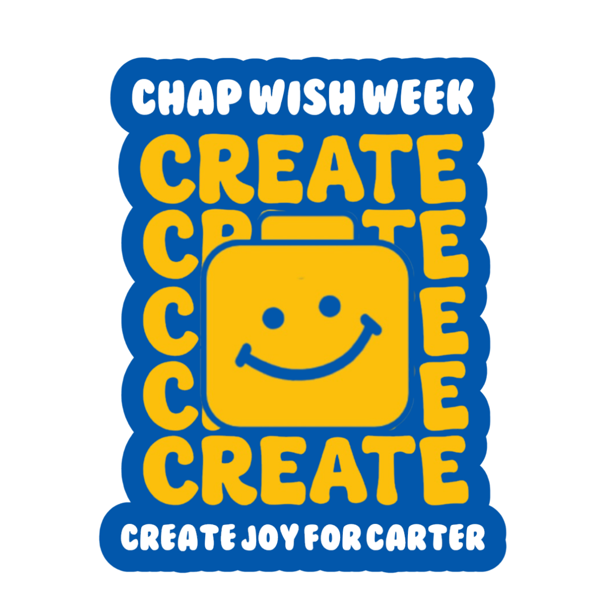
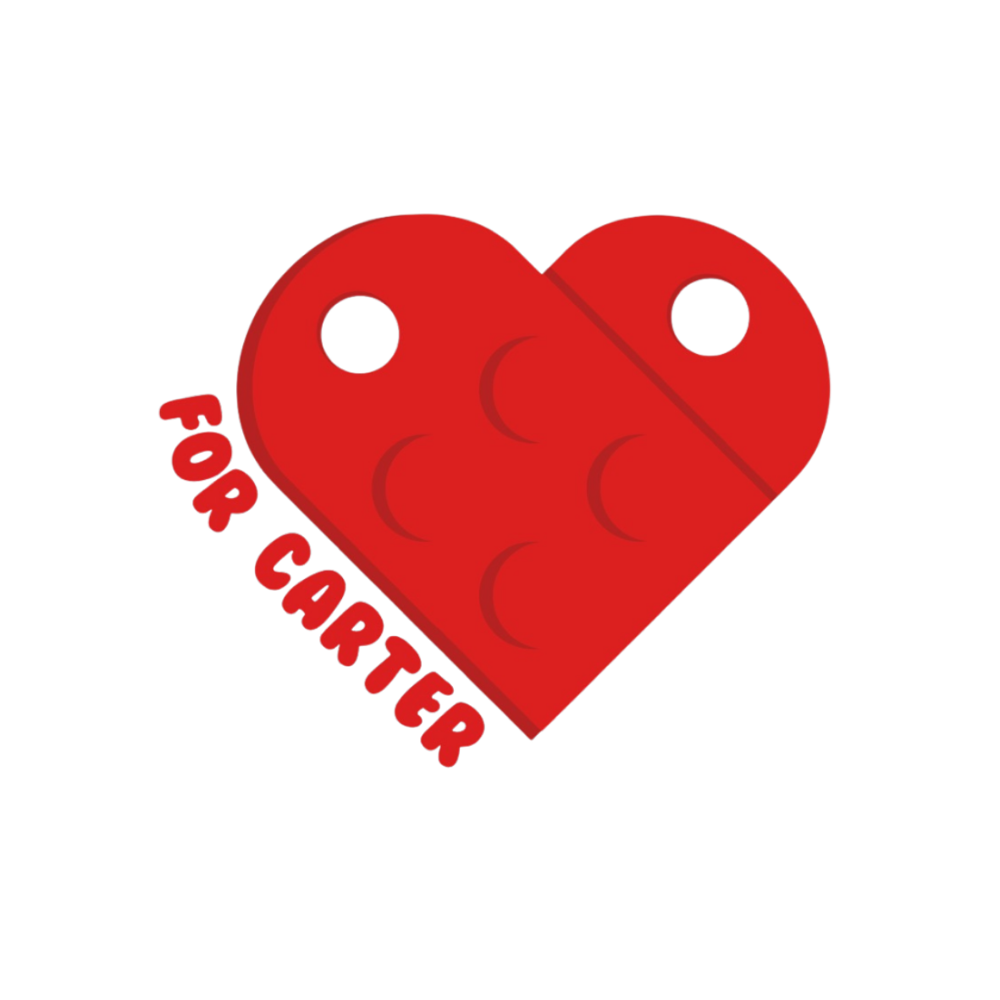
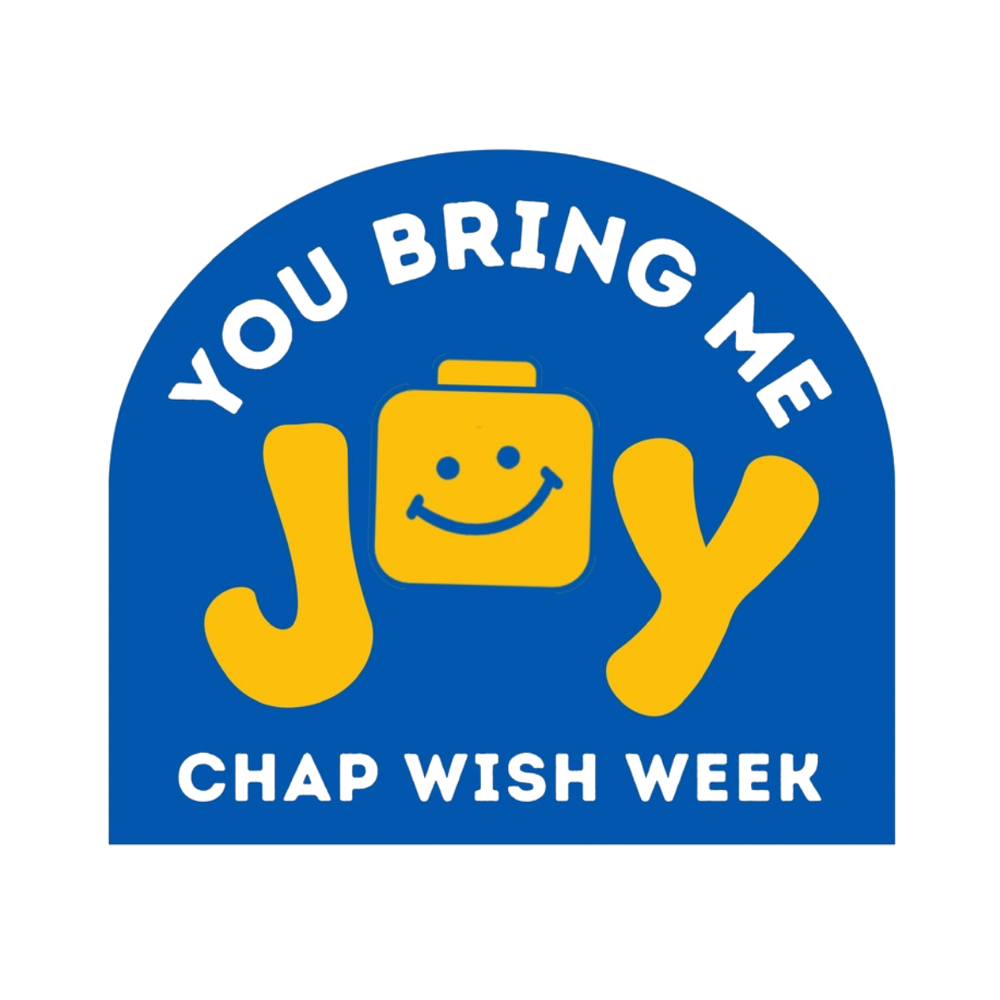
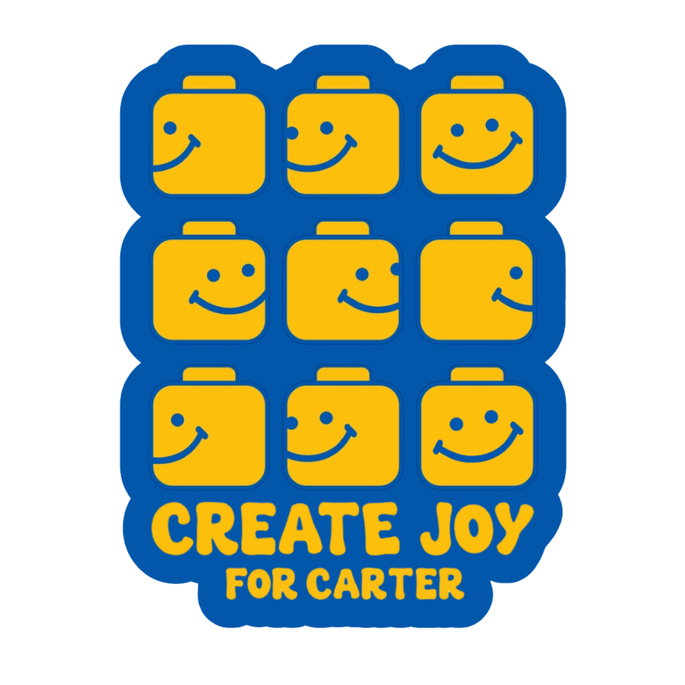
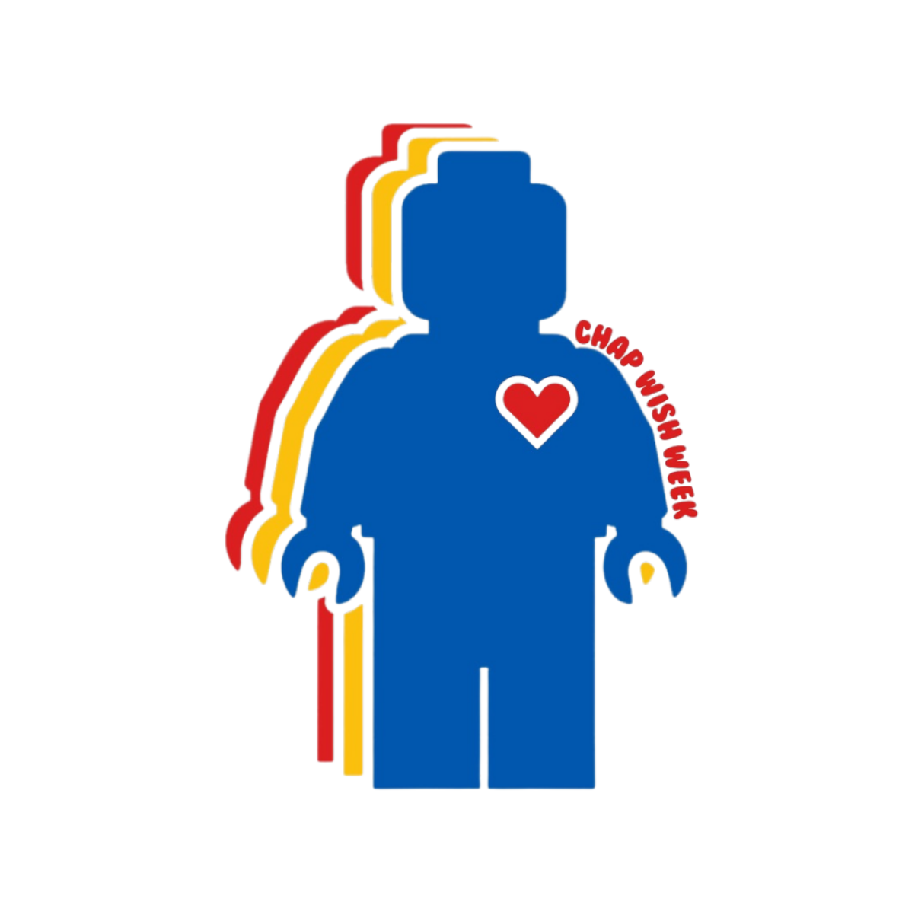
the overnight switch
Right after the assembly reveal, I had to change the entire social media presence from generic Wish Week colors to Carter's theme. I ran that campaign myself. Here's a stand-in for what that switch looked like. More on the social media campaign lives on the selected social media page.
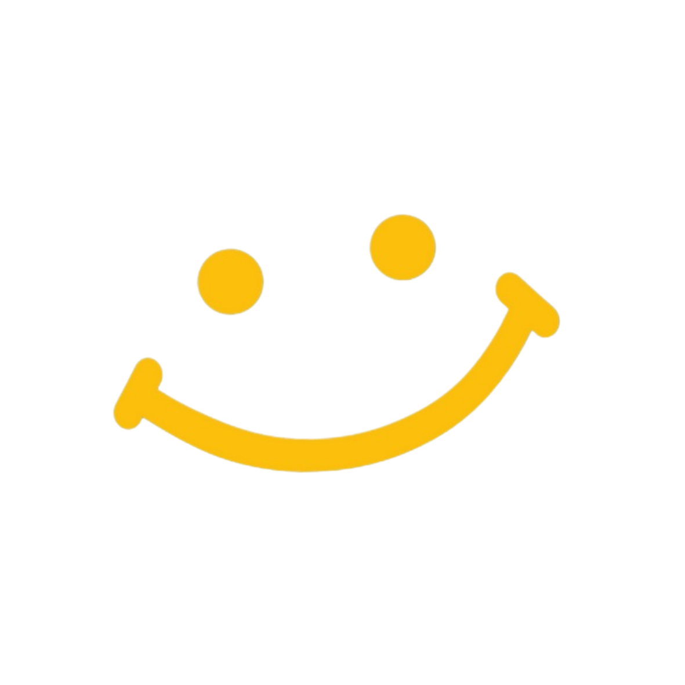
wish week is comingA simplified cute little interactive element, not representative of the entire campaign change.
designing + building
my part
I was a project coordinator and the designer for the week: the smiley logo, the color scheme, the hoodie, the stickers, and the tattoos, plus the social campaign, all with input from my fellow coordinators and our advisor. The shirt itself was not mine.
things working and breaking
I drew the final smiley, and I was a big advocate for it not having smile lines at both ends. We went with them anyway, and now I'm glad we did. I think I was trying to be more "modern" than what represented our wish kid. At the end of the day, the smile lines that made it feel more "childish" to me was exactly what we needed.
continuous improvement
It was a huge ask for me to do all of the promotional material, so I did delegate. However, I likely did not communicate as well as I could the brand identity I was going for, thus leaving some of our promotional material better than others. I think in the future I could be better with communicating brand identity.
- tools
- Linearity Curve (similar to Adobe Illustrator), Canva
- timeline
- Spring 2025, january to april
- role
- project coordinator · designer · social media lead
- event
- wish week, for make-a-wish colorado
- status
- complete · ~200 hoodies sold out twice